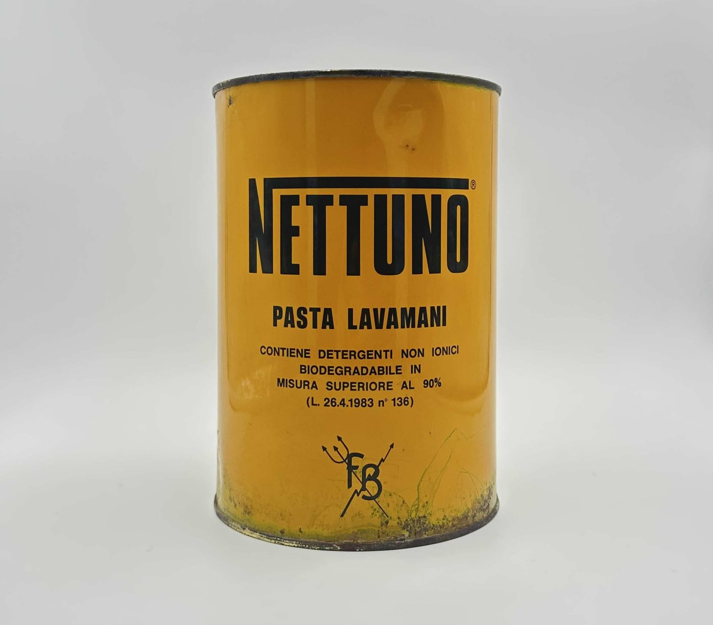
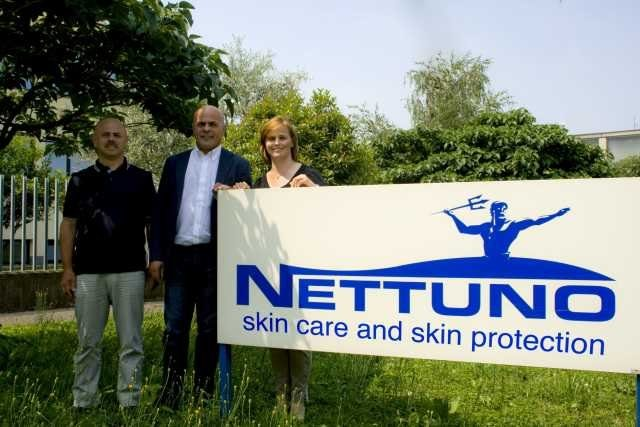
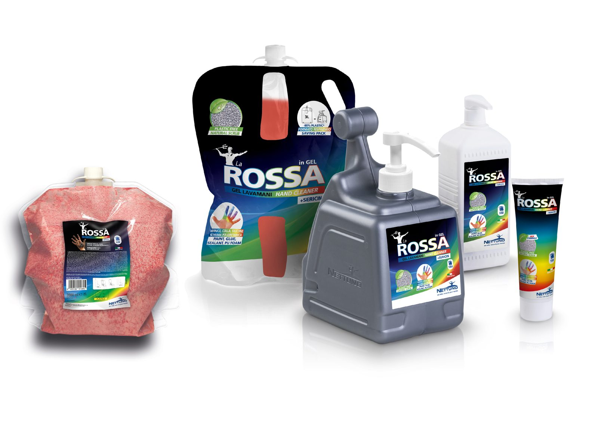
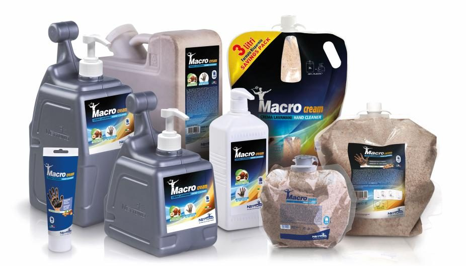
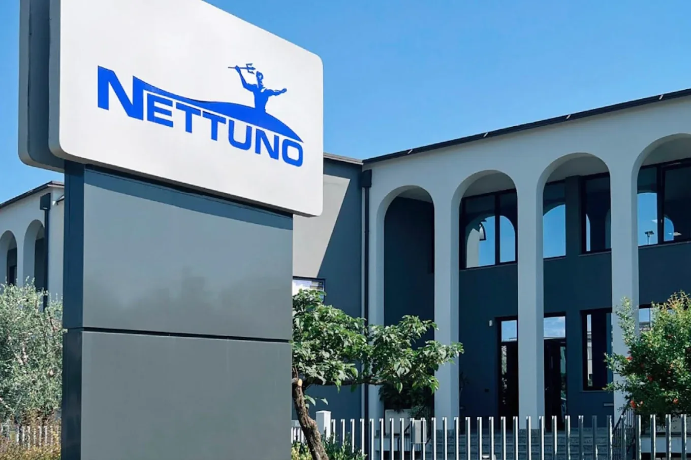
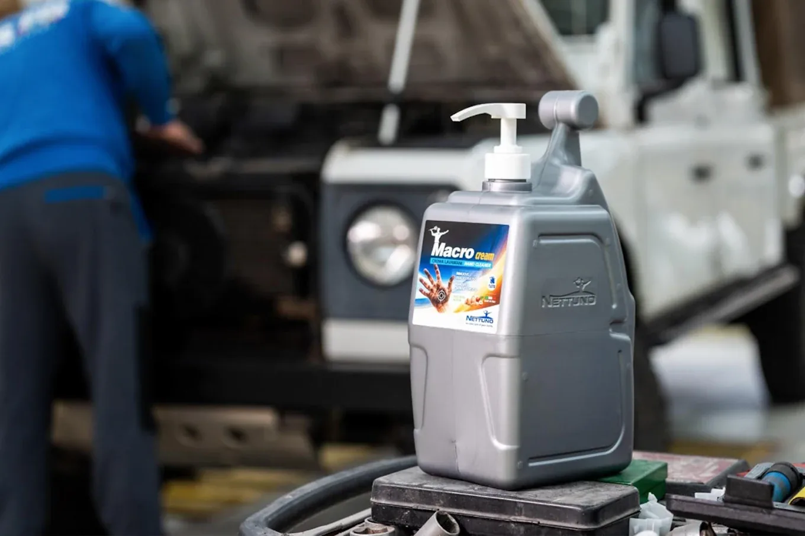
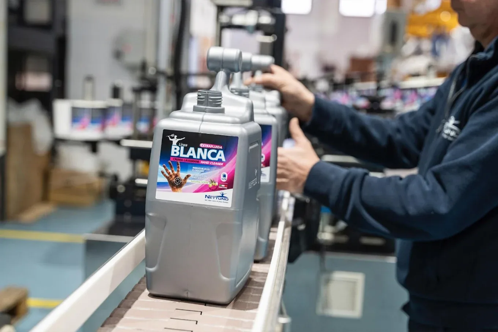
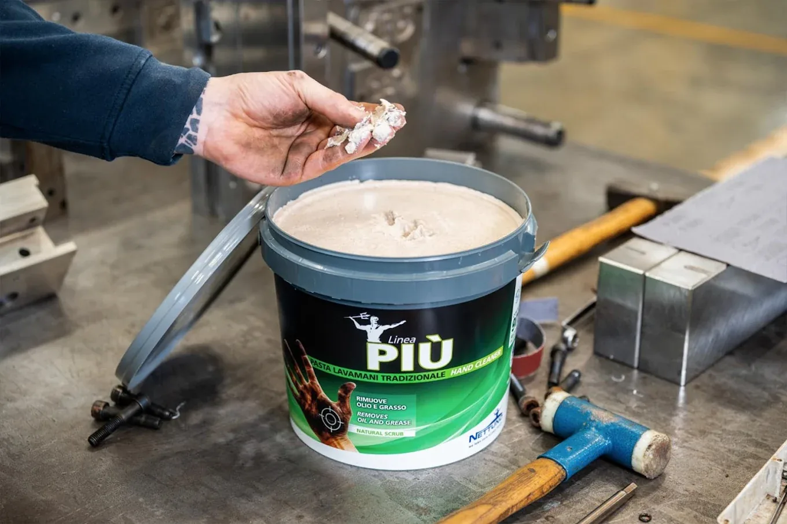
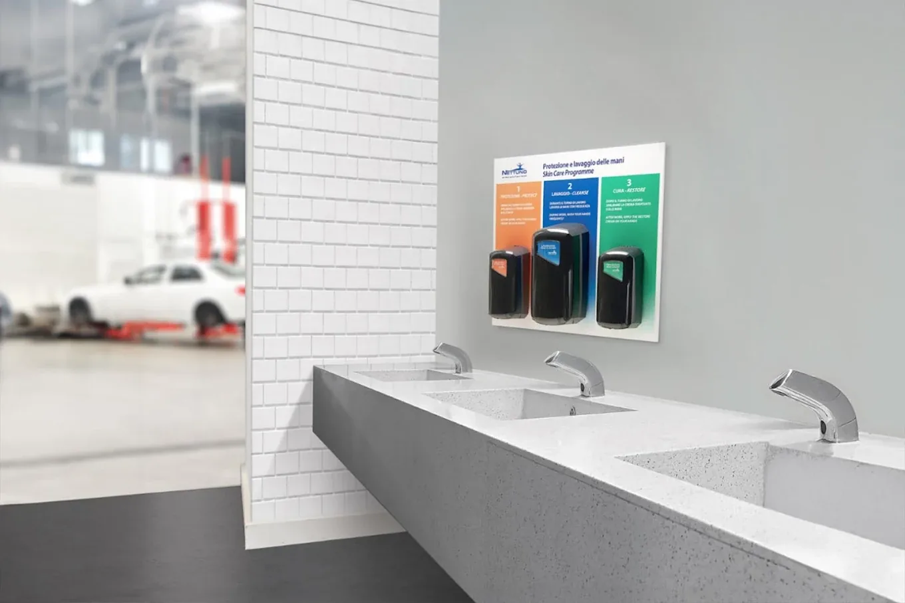

Esperienza PCTO · 4ª Superiore
Tre settimane di stage in Nettuno Srl
La sezione più completa del mio percorso: un’esperienza in azienda che ho collegato direttamente alle materie di studio — Diritto, Economia Politica e Matematica.
01
L’azienda: Nettuno Srl
Ho svolto uno stage di tre settimane presso la Nettuno Srl di Castelli Calepio (BG), storica azienda nella produzione di saponi industriali, creme cosmetiche e prodotti per la pulizia professionale.
Durante questo periodo ho potuto affiancare diversi reparti aziendali, partecipando ad attività manuali, logistiche, chimiche e operative negli uffici commerciali. È stata un’esperienza molto formativa, che mi ha permesso di conoscere il mondo del lavoro da vicino e di mettere alla prova le mie capacità in contesti reali e diversi.
1970Anno di fondazione
42Dipendenti
ISO 9001+14001Certificazioni
3Settimane di stage
La prima crema Nettuno
Uno degli oggetti più simbolici che ho fotografato durante lo stage è la prima crema prodotta dalla Nettuno, conservata con grande cura in azienda. Rappresenta non solo l’inizio di un percorso imprenditoriale, ma anche l’identità e la determinazione che hanno reso Nettuno un punto di riferimento nel suo settore.
La Nettuno S.r.l. nasce nel 1970 in provincia di Bergamo, quando Battista Fratus, dopo un’esperienza nel settore chimico, decide di fondare un’impresa che unisse competenza, innovazione e valori umani. Nel tempo l’azienda è diventata leader nella pulizia professionale delle mani, continuando a crescere nel rispetto della sostenibilità.

02
Attività svolte
Anche se non ho svolto mansioni dirette da dipendente, ho partecipato a numerose attività di supporto, imparando ad adattarmi a contesti organizzativi diversi e a comprendere il funzionamento interno di un’azienda strutturata.
- Supporto nel magazzino e movimentazione leggera delle merci
- Osservazione e assistenza nei reparti produttivi
- Affiancamento in semplici operazioni di laboratorio chimico
- Supporto negli uffici commerciali con archiviazione e documentazione
- Realizzazione della nuova mappa dei cestini per la raccolta differenziata, con Servizi Comunali S.p.A.
- Fotografie per la documentazione interna e la presentazione del lavoro
- Applicazione di etichette su prodotti finiti e semilavorati
- Preparazione di campioni destinati alle fiere
03
Competenze sviluppate
Le esperienze vissute mi hanno permesso di acquisire competenze trasversali, utili per qualsiasi futuro contesto lavorativo.
Tecniche
Osservazione dei processi produttivi, nozioni di base di laboratorio e gestione della documentazione.
Laboratorio
Logistica
Professionali
Rispetto delle procedure aziendali, organizzazione del lavoro e capacità di muoversi in un’impresa strutturata.
Procedure
Precisione
Personali
Collaborazione in team, capacità di adattamento e attenzione ai dettagli in ogni attività.
Team
Attenzione
04
Uno sguardo all’interno dell’azienda









05
Collegamenti interdisciplinari
Lo stage non è rimasto un’esperienza isolata: l’ho letto attraverso le materie che studio, scoprendo come la teoria scolastica spieghi davvero ciò che accade in un’impresa reale.
Lo stage mi ha fatto toccare con mano i concetti del diritto commerciale applicati a un’azienda vera.
Profilo giuridico
- Forma giuridica: società a responsabilità limitata (S.r.l.), fondata nel 1970 da B. Fratus
- Sede: Viale Industria 16/18, Castelli Calepio (BG)
- Capitale sociale: € 50.000 · Categoria: piccola impresa (parametri UE)
- Registro Imprese di Bergamo (REA 218463): pubblicità notizia e dichiarativa dei dati societari
Ai sensi dell’art. 2082 c.c., Nettuno esercita professionalmente un’attività economica organizzata per la produzione di beni (detergenti per l’igiene delle mani). Rientra tra gli imprenditori commerciali secondo l’art. 2195 c.c., con l’obbligo di iscrizione al Registro delle Imprese e di tenuta delle scritture contabili in forma ordinaria (libri sociali, libro giornale e libro degli inventari) ai sensi dell’art. 2214 c.c. L’organizzazione interna comprende i reparti di ricerca e sviluppo, produzione, controllo qualità (certificazioni ISO 9001 e ISO 14001) e commerciale, in linea con l’“organizzazione dei fattori produttivi” dell’art. 2082 c.c.
Governance e responsabilità
La società è gestita da un amministratore unico o da un consiglio di amministrazione, secondo le nomine dell’assemblea dei soci. Gli amministratori hanno responsabilità civile e penale per eventuali violazioni di legge. L’organo di controllo è obbligatorio solo oltre determinate soglie dimensionali (art. 2477 c.c.): ad oggi Nettuno non vi rientra e può avvalersi di un revisore facoltativo.
I circuiti economici
Circuito reale: Nettuno trasforma materie prime chimiche in prodotti finiti, quali gel lavamani e creme barriera, avvalendosi di impianti industriali moderni e di manodopera specializzata. Questa produzione rappresenta il valore aggiunto dell’azienda, che si traduce in contributo al PIL italiano.
Circuito monetario: i ricavi derivano da vendite nazionali e internazionali — tra cui esportazioni in Spagna, Portogallo e Ucraina — mentre i costi comprendono materie prime, salari, energia, logistica e oneri finanziari.
Contributo all’economia reale
Generando valore aggiunto (ricavi meno costi di produzione), Nettuno concorre al PIL nazionale, sostiene l’occupazione locale e favorisce l’indotto della filiera chimico-cosmetica lombarda. Grazie all’export, apporta inoltre un saldo positivo alla bilancia commerciale italiana.
Responsabilità sociale e Industria 4.0
L’azienda adotta pratiche sostenibili: è certificata ISO 9001 e ISO 14001 e alcuni prodotti recano il marchio Ecolabel UE, in linea con la corporate social responsibility. Gli investimenti in automazione e tracciabilità si collegano alla “quarta rivoluzione industriale” e all’importanza dell’innovazione per la competitività, temi evidenziati anche nel Rapporto Draghi 2024.
Il bilancio, depositato annualmente al Registro delle Imprese (conto economico, stato patrimoniale e nota integrativa), è lo strumento fondamentale di trasparenza verso gli stakeholder.
Ho analizzato la produzione di Nettuno per tre prodotti rispetto al mercato (Italia / Estero), per verificare se il tipo di prodotto e il mercato di destinazione siano statisticamente indipendenti.
| Prodotto \ Mercato | Italia | Estero | Totale |
|---|---|---|---|
| Gel Igienizzante | 180 | 60 | 240 |
| Crema Barriera | 120 | 40 | 160 |
| Soluzioni Disinfettanti | 100 | 50 | 150 |
| Totale | 400 | 150 | 550 |
| Prodotto \ Mercato | Italia | Estero | Totale |
|---|---|---|---|
| Gel Igienizzante | ≈ 174 | ≈ 66 | 240 |
| Crema Barriera | ≈ 116 | ≈ 44 | 160 |
| Soluzioni Disinfettanti | ≈ 109 | ≈ 41 | 150 |
| Totale | 400 | 150 | 550 |
I valori teorici si ottengono con la formula (totale di riga × totale di colonna) / totale generale — ad esempio 400 × 240 / 550 ≈ 174.
Conclusione
Poiché le due tabelle non coincidono, i due caratteri X (tipo di prodotto) e Y (mercato) non sono statisticamente indipendenti.